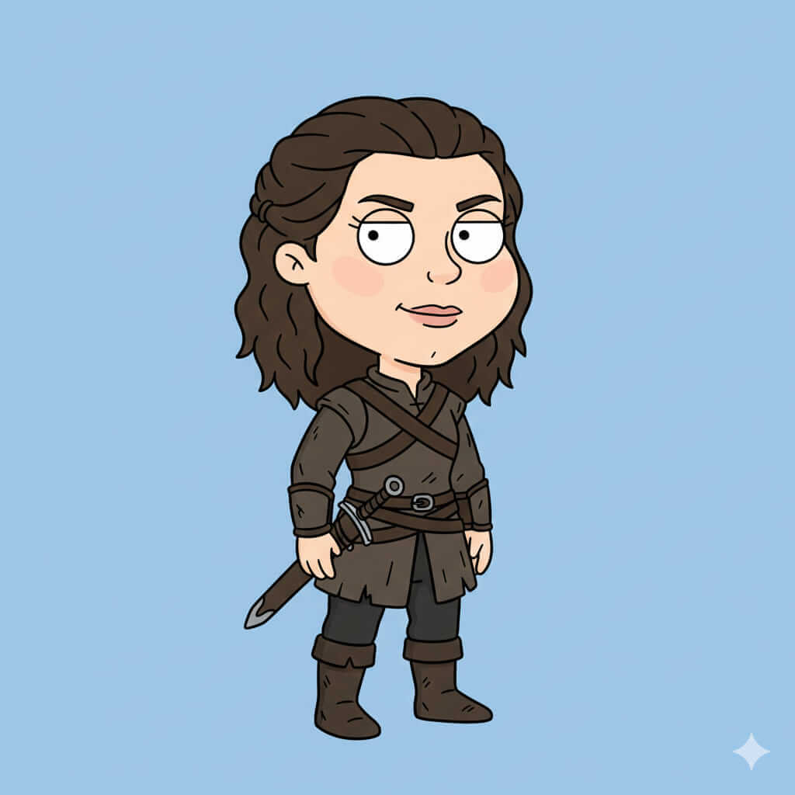

Aryne Starfell
Historia
Aryne Starfell nació como la hija menor de la Casa Starfell, entrenada desde pequeña en el arte del sigilo y la observación. A diferencia de su hermano y hermana mayores, Aryne prefirió la sombra a la luz, desarrollando habilidades mortales en infiltración y combate con dagas. Su vida estuvo marcada por la necesidad de proteger secretos de la familia y actuar como guardiana silenciosa de la fortaleza, moviéndose entre los muros nevados con rapidez y sigilo excepcionales.
Con el tiempo, Aryne se convirtió en la sombra silenciosa que nadie ve venir. Su presencia se siente solo cuando ya es demasiado tarde para los enemigos de Starfell. A pesar de su habilidad para la muerte y la infiltración, su lealtad a su familia es inquebrantable, y su determinación por proteger la herencia del norte la hace tan peligrosa como imprescindible. Cada misión que emprende es un acto de amor hacia su gente y su casa, y su nombre ha comenzado a resonar en los rincones más oscuros de Throonia.
Casa y relaciones
Casa: Starfell.
Familia: Joren Snawd y Serya Starfell (hermanos).
Aliados: Miembros entrenados de Starfell, espías y exploradores del norte.
Enemigos: Blackmaw, Targheris y todos los que amenacen la seguridad de su familia.
Habilidades y personalidad
Sigilo absoluto - Agilidad letal - Maestría con la daga.
Personalidad reservada, astuta y decidida, con un fuerte sentido de lealtad y protección.